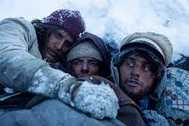
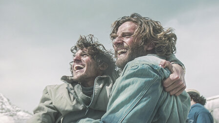
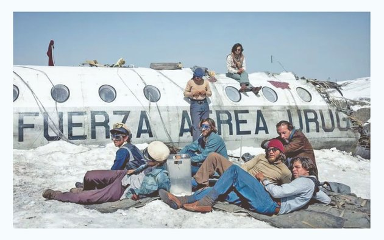
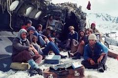
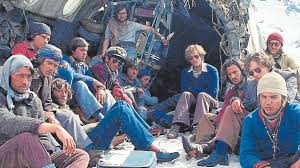
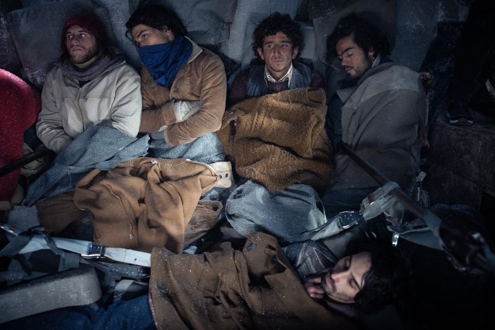

SOCIEDAD DE LA NIEVE
Accidente aéreo en los Andes y las primeras etapas de supervivencia
Lucha por la supervivencia
El debate interno de los personajes sobre el valor de la vida humana
La formación de un equipo para sobrevivir juntos
Exploración de la moralidad de recurrir al canibalismo para sobrevivir
Esperanza y desesperación de ser rescatados
Lucha por la supervivencia enfrentado el frío extremo, escasez de alimentos y lesiones
     
llegada del rescate y el regreso a la civilización